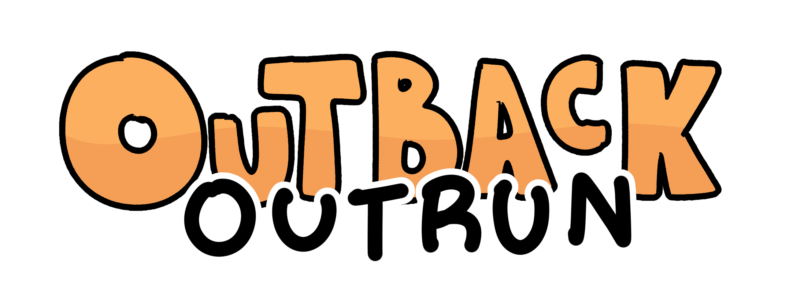
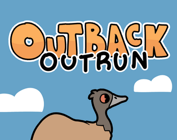

Nov 2021
You are emu. Eat grape popsicles. Avoid Australian creatures. An arcade game developed solo for a 48 hour game jam. My first time using Godot and 3D!
Made for Games Den Quick Game Jam.

Made for Games Den Quick Game Jam.
Godot
Clip Studio Paint


Details
For Outback Outrun, I wanted to create a simple but polished game that utilized 3D. As I developed this project solo, I had to create all the
code and art assets myself. However, I did get help from my brother as he composed the music for the game.
Athough the game is in 3D, all the assets are 2D sprites, as I did not have 3D modeling expertise, creating a style similar to that of the "Paper Mario" series. As the game involves a lot of dodging, this can make the game difficult as depth perception plays a big role in the game. So, it was necessary to give the player and enemies drop shadows to better show depth in the game.
I am pretty happy with the results of the game, especially the aesthetics and the camera movement! I hope to play around with 3D more in the future.
Athough the game is in 3D, all the assets are 2D sprites, as I did not have 3D modeling expertise, creating a style similar to that of the "Paper Mario" series. As the game involves a lot of dodging, this can make the game difficult as depth perception plays a big role in the game. So, it was necessary to give the player and enemies drop shadows to better show depth in the game.
I am pretty happy with the results of the game, especially the aesthetics and the camera movement! I hope to play around with 3D more in the future.